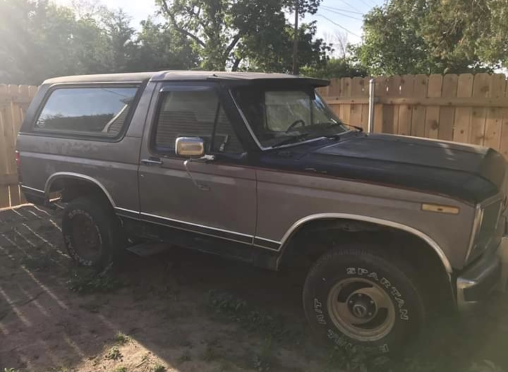
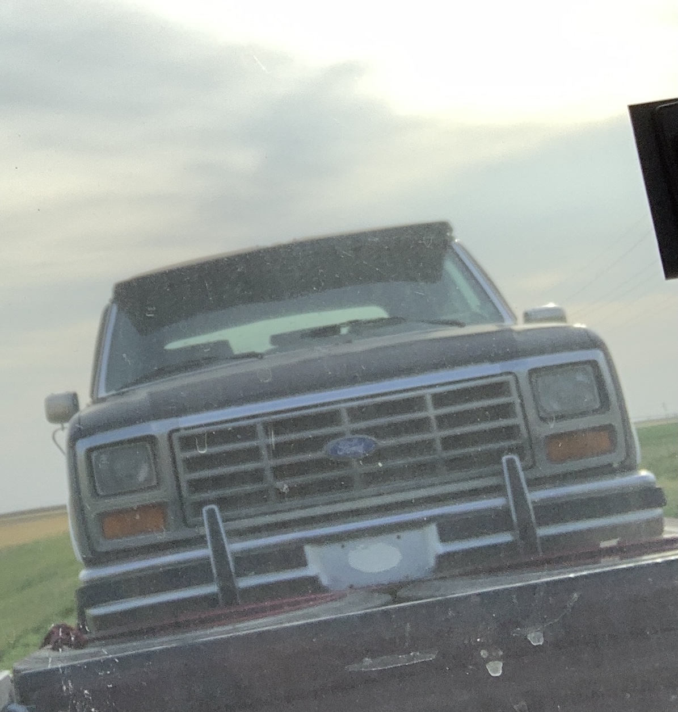
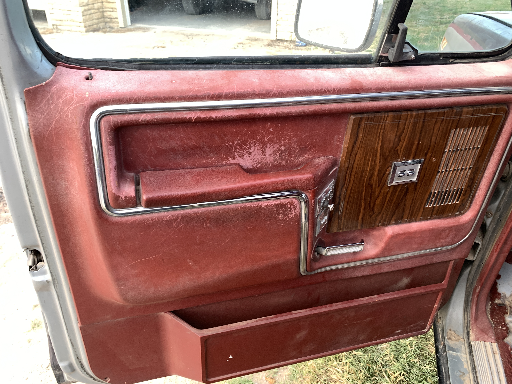
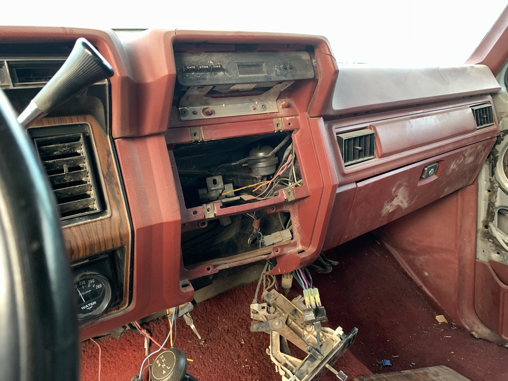
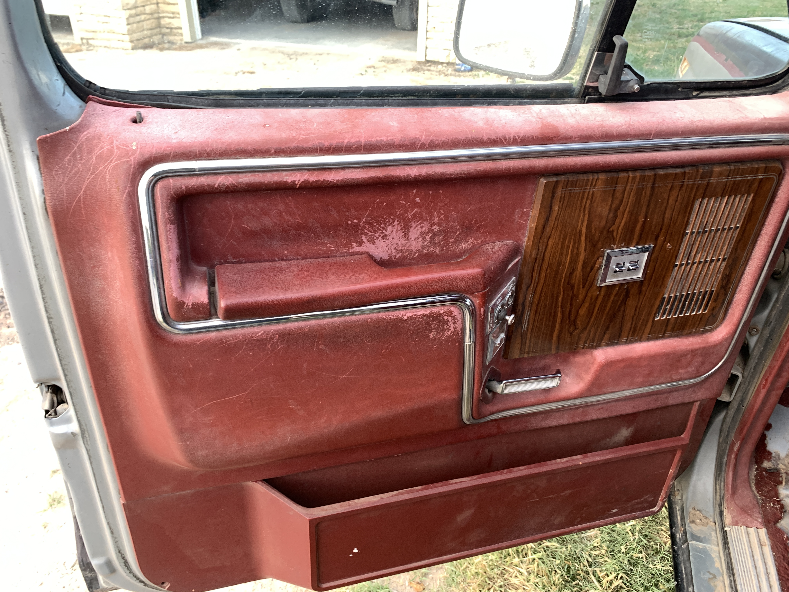
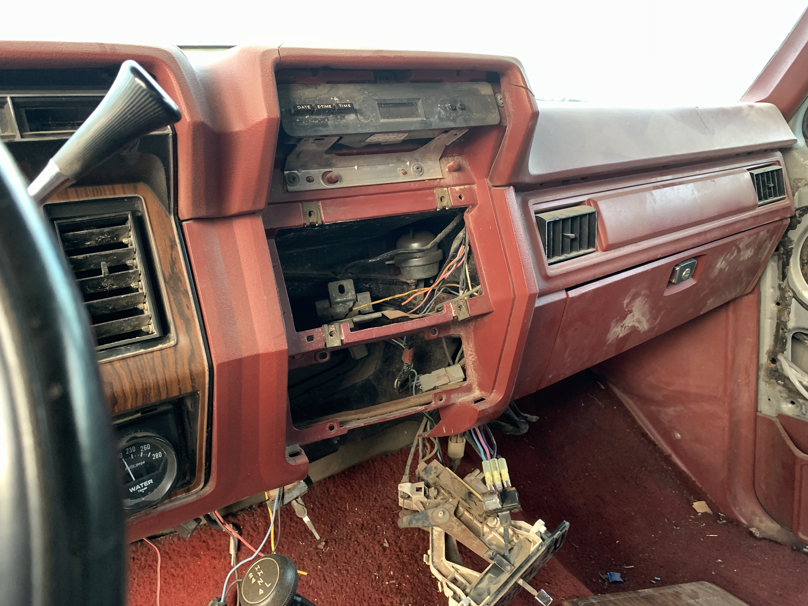
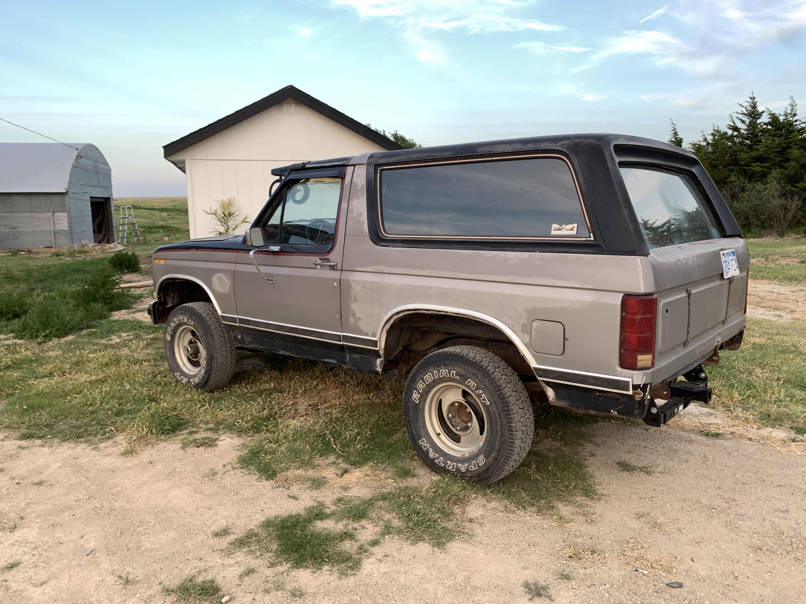
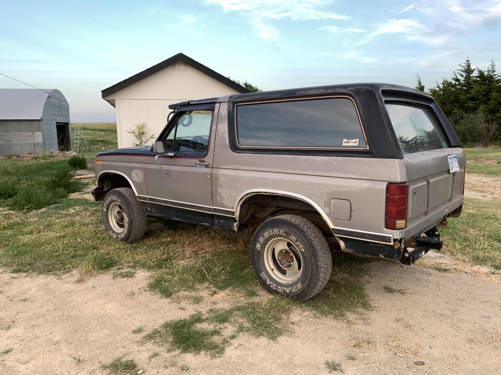
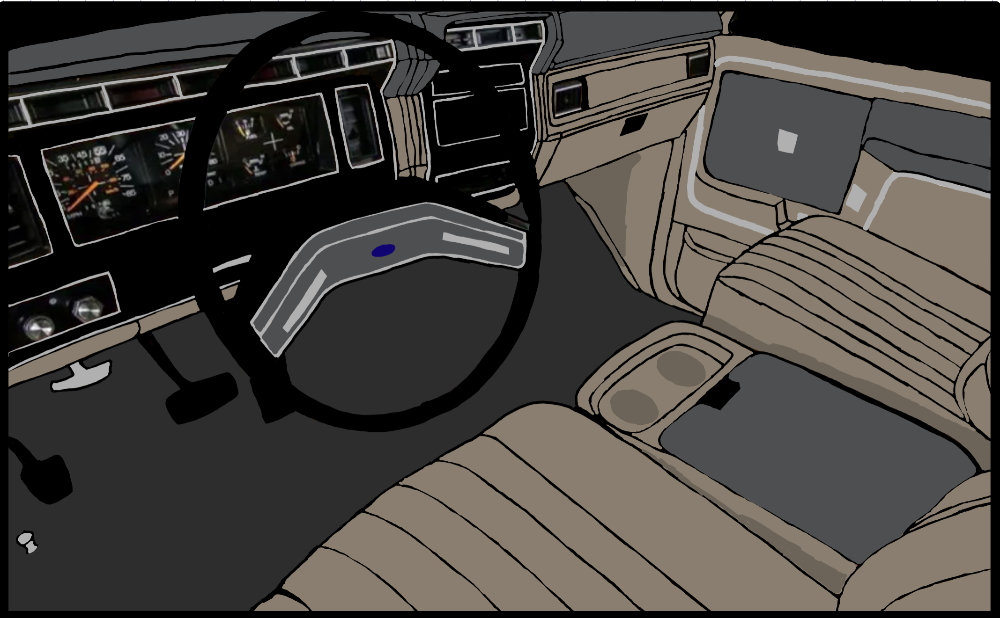

Shortly after being sent home due to COVID-19, I talked with my brother about finding an old Bronco to fix up - just something to work on while being stuck at home. I had looked through classifides and found a few of the later models, but nothing I HAD to have. Then about mid-June, a 1984 came up for sale. It was a family I knew who had bought it for their sons as a project first vehicle, but turned out to be far more than they were looking for. 1984 was the last year they were carburated, and the last generation of the OBS Fords before they started to round and smooth out the body - nicknamed by enthusiasts as the Bullnose Fords. I was sold, it seemed like a great restoration project, but also with plenty of room to upgrade and modify.
So we went to pick it up that evening, and it fired right up and I was pretty excited. The interior was in rough shape, the exterior was also pretty sad, but the 351w under the hood seemed mechanically sound.
After bringing it home, I needed somewhere to put it. Preferrably under a roof, but Dad has most of our sheds full. One of the sheds had been full of junk for as long as I knew, so I set out to clean it out. This delayed tearing into the Bronco, but once I was done I would have a space all my own.
 




 


Once the shed was cleaned out and patched up so no more wasps could get in, I pulled the Bronco in and promptly began tearing the interior out.


At this point, I began to really wish I had done a better job documenting the tear down. Should be fun putting it all back together I guess. I had to go back to Boston as our apartment lease had started, so physically working on the Bronco came to a halt. The break did allow me to do quite a bit of reading and researching on the various online forums, and let me get a better idea of everything I wanted to do to it and in what order
Since the motor runs, I decided to start by putting the interior back together so it was actually nice to drive and motivate me to do more upgrades. I came up with a color scheme for the interior, because the old school red interior absolutely had to go. I based it off the "light medium camel" interior Ford is currently using in their F-150s.
I've been ordering and shipping parts home, and plan on installing a new wiring harness and repainting and installing as much of the plastic trim as I can when I go home over Christmas. Who knew seats would be so expensive??